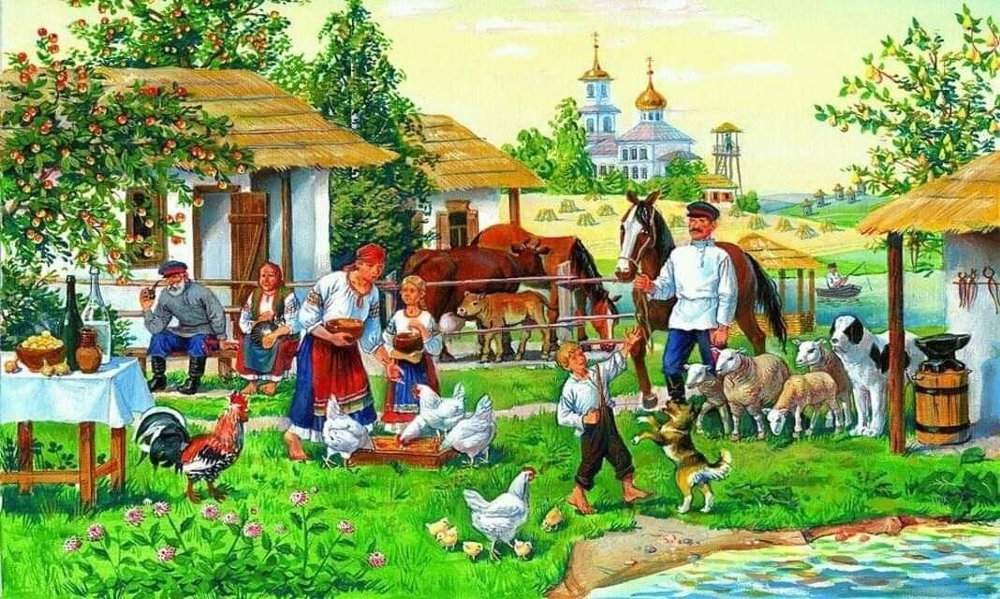

Don KosakenChor Russland



History of the Cossacks The Cossacks are descendant from Russian farmers and steppe dwellers, who fled to the south east of the empire in the early middle ages, to live there in freedom. Among those who fled were peasants, serfs, impoverished nobles, and many other groups of people that clung to the fringes of society. The name Cossack comes from the Turkish word “quzzaq”, which means adventurer or free man. The Cossacks living in the Don delta formed the single largest group.
Being free was unusual in a country where serfdom was the norm. This independent community of Russian men and women lived outside the control of Russian rulers, especially those who lived on the banks of the river Don and its tributaries. In the early days, nobody seems to have farmed for themselves. Instead, they sustained themselves by hunting, fishing and gathering whatever the woods offered. Theirs was a wild life, in which settling down and raising a family, or even having a normal social life, was rare. With their light ships they sailed the Kaspian Sea, the Sea of Azov and the Black Sea, all the way to Constantinople (now Istanbul). They acquired clothes and weapons by plundering Turkish or Tartar villages on the coast of the Sea of Azov, or by raiding the trade routes up and down the Don and the Volga. Over time, Cossack society developed into a very patriarchal one and daily life became simple and steeped in tradition. Many of these traditions, such as obedience to the law, discipline, a will to work, bravery, respect for the elderly and a strong familial bond, were maintained and strengthened through the ages
In peacetime, Cossacks farmed, fished, hunted and conducted military exercises in which they focused on increasing their knowledge of weapons, especially ranged ones. And when the Cossacks went into battle they always rode on horseback. That’s why there are still Russian sayings such as these: • A Cossack will starve, but his horse is fed. • To a Cossack his horse is worth more than himself. • A Cossack without a horse is like a soldier without a rifle. A campaigning Cossack could navigate by the stars, he could camouflage himself expertly and he was a great tracker. He’d keep a ration of biscuits, bacon, millet and dried meat and fish. He would ford small streams, but in order to cross a larger river he would first build a small wooden raft for his saddle and gear. Then, he’d fasten the raft to his horse’s tail and hold onto its mane as it swam across. A man’s life consisted of work and military service. Men also had to ensure their sons were raised for the same purpose, namely the defence of their motherland. Every new generation of Cossacks inherited this sense of duty and unquestioning loyalty from their fathers. Their community was founded on ideals like togetherness, fraternity and mutual assistance - a Cossack was allowed to die, but he had to save his comrades. Both officers and regular soldiers fulfilled these duties with an inner sense of conviction. They were less afraid of being punished for negligence than they were of being despised and ridiculed by other inhabitants of the stanitsa (a Cossack settlement).
All men between the ages of 20 and 45 could be drafted into military service. That meant women bore responsibility for most household tasks. The well-known historian F. Sjtsjerbina describes these “kazatsjka” as ideal people, who never let anything get them down, no matter how hard their lives were. Cossack women were every bit as brave and good at riding as their husbands and sons. They were proficient with guns and sabers and they regularly stood shoulder to shoulder with their men while defending their possessions. Children as young as ten were taught how to ride, while weapons training started at fourteen. Once they had learned to ride they would guard the cattle and horses. If necessary they helped the adults to defend their strongholds and villages. According to the historian Potto, the entire Cossack population showed great bravery in the defence of the stronghold of Mozdok, which was founded in 1763 as an outpost on the Northern Caucasian border. This was during the first Russo-Turkish war (1768-1774) when Mozdok was surrounded by an army of eight thousand Tartars, Kabardins and Turks. The Mozdok Cossacks were on campaign and only the women, children and elderly remained along with a few magistrates. The enemy army was confident it would run the defenceless inhabitants into the ground. Especially because the city even didn’t have a defensive wall. Yet, the Turkish army was faced with rugged resistance from a unique kind of army with a wondrous array of weapons. The Cossack women remained calm and didn’t allow themselves to be fazed by howling bullets, artillery barrages and the wild cries of their attackers. And the battle for Mozdok was by no means an exception. Cossack history is littered with similar events.
The Cossacks never lost sight of their blood ties to the Russian people. Cossack units came to the aid of Russian troops when Tsar Ivan the Terrible conquered the city of Kazan. They also battled on the Baltic coast in service of the Duchy of Moscow. They were the ones who fought bravely, fanatically even, against invading the Swedes and who drove them off of Russian soil. Liberation from the yoke of Tartar rule and the repulsion of Napoleon’s armies can also be attributed, in large part, to the Cossacks. None of the Russian Empire’s wars of the nineteenth and early twentieth centuries would have been possible without the Cossacks. They fought in the Caucasus , in the Crimea, during the Russo-Turkish war, they fought for the liberation of Bulgaria and against the German Imperial armies during the First World War (1914-1918). Through the ages, Russian rulers were well aware of the Cossacks’ military role. The Russian Tsars did their utmost to bind the Cossacks to them. Weapons, munitions, money, goods and food were regularly sent their way. It was the only way to maintain some influence over the unruly and sometimes rebellious Cossacks. With such a well-trained and well-armed force in their own back yard the Tsars had no other option. Just imagine if the Cossacks turned against them. After all, the Cossacks only obeyed their own elected leader, the Ataman. The Cossack’s fame, especially that of the Don Cossacks, reached its zenith around 1800. The river Don is the cradle of all Don Cossacks. Though, at the start of the nineteenth century they were scattered over eleven armies on the Don, the Kuban, the Terek, the Ussuri, the Amur, the Trans-Baikal, in Astrakhan, in Uralsk, in Orenburg, in Semiretsjensk and in Siberia. All of these armies consisted of so called “sotjen” (hundreds) and regiments of the Don army. It was possible to mobilize “70,000 sabers” (experienced riders), just on the Don.
The communist revolution of 1917 caused something of a rift in the Cossack community. Many of the poorest amongst them followed the Bolsheviks, while others took a neutral or waiting stance. Loyalty to the country appeared to be greater than loyalty to the Tsar, who had been deposed. Even so, the communists reserved attitude towards the Cossacks didn’t last long. The free and independent Cossacks, and generally all those who voiced their opinions, soon got into trouble with the communist rulers. From 1919 onwards, a kind of “de-Cossacking” got underway, in which the Cossacks faced bloody persecution and were eliminated as a military force. They were made to choose to either flee or betray their ancestry. It meant that as a community the Cossacks in Russia went underground and stayed there for 70 years. After the fall of communism descendants of the Cossacks immediately emerged. They’ve since established new Cossack settlements, the so called stanitsa’s, on the banks of the river Don. The Cossacks have well and truly returned to the Russian firmament.